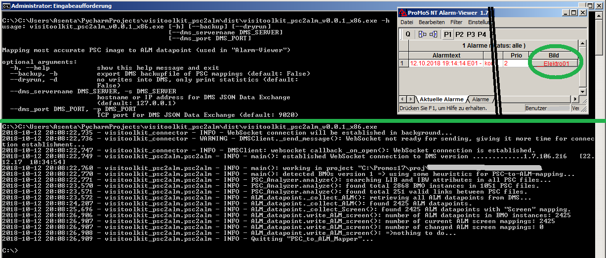
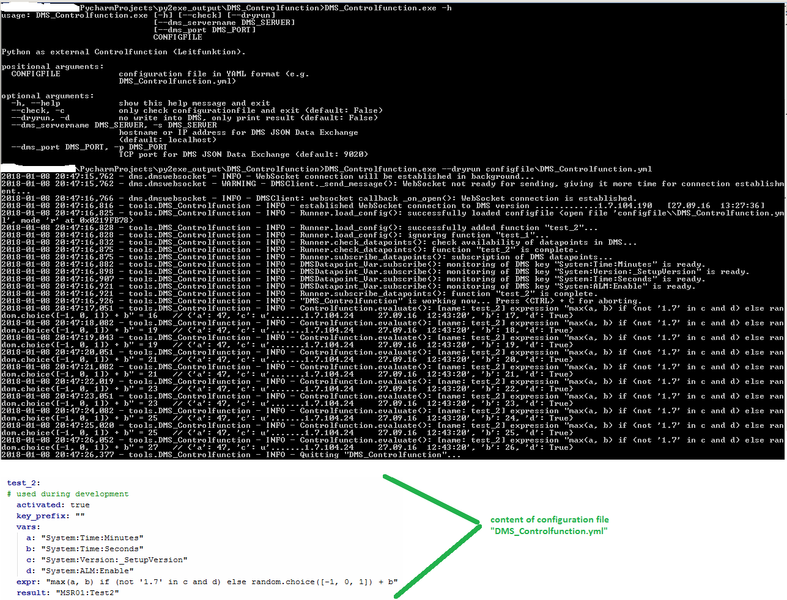
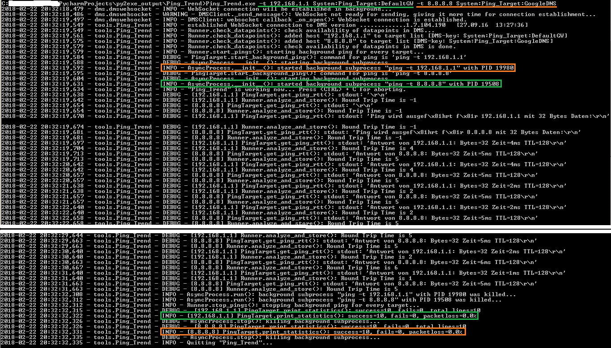

{kind=link}


{kind=link}
{kind=link}

Partial rewrite of pyVisiToolkit in Python 3 with proper Python packages on PyPI. Cleanup and documentation of development workflow.
| Toolname | Description | Technology/Dependencies | Screenshot |
|---|---|---|---|
| visitoolkit_psc2alm | Mapping tool for setting PSC reference in AlarmViewer to the best-matching image containing the BMO-instance. Then user can directly open PSC image where error situation is shown. | JSON over WebSocket, ProMoS v1.7 - v2.x |  |
Miscellaneous inofficial homegrown tools and helpers written in Python 2.7 for the proprietary Building and Process Management System 'ProMoS NT' (c) MST Systemtechnik AG (also known as 'Saia Visi.Plus' (c) Saia-Burgess Controls AG)
Intention: Support creator of visualisation projects... Add efficiency... Reduce manual error-prone processes... Add missing features...
Some screenshots as preview (everything is "work in progress", but usable...)
| Toolname | Description | Technology/Dependencies | Screenshot |
|---|---|---|---|
| BMO Tie-Point-Info | Copy a BMO (VLO) from Grafikeditor into clipboard and get information for all rootlevel BMO-attributes. | ProMoS DLL v1.5 - v1.7 | |
| DMS Value Changer | Retrieves all current values of a given list of DMS keys. In combination with Excel an efficient way for changing many different DMS-values. It generates DMS-exportfiles before and after writing for simple reversing this DMS-changes. | ProMoS DLL v1.5 - v1.7 | |
| PSC file selector | Enables opening PSC files in Grafikeditor by doubleclick in a directory browser. Uses Regex filter for filenames and Regex fulltext-search. Context menu allows open a file in Windows Explorer, Notepad++ and copying filename to clipboard. | ProMoS DLL v1.5 - v1.7 | |
| Renumber Tool | Automation of renumbering of absolute flag-/register-/datablock-addresses in currently running project. Then generate code with PET as usual. | ProMoS DLL v1.5 - v1.7 | |
| Search BMO Instances | Listing tool for searching in currently running DMS for all instances of a specific BMO. It has filter possibilities as Regex in DMS-key and it's NAME attribute. | ProMoS DLL v1.5 - v1.7 | |
| DMS tracer | Monitoring of adding, value changing or deletion of DMS keys. It polls all subkeys under given DMS-key and logs differences to console. | ProMoS DLL v1.5 - v1.7 | |
| DMS Controlfunction | Python as external DMS controlfunction (Leitfunktion): evaluates given Python expressions when monitored DMS datapoints have changed, then writes results back into DMS. First program which uses the new in pyVisiToolkit implemented "ProMoS DMS JSON Data Exchange"(c), reading, writing and monitoring DMS datapoints via WebSocket. :-D | JSON over WebSocket, ProMoS v1.7 - v2.x |  |
| Ping Trend | Executing Ping.exe as background task, interprets output of Ping.exe and writing the "Round Trip Time" to a DMS key. Commandline arguments: one or more ping targets. One instance of Ping.exe per ping target runs concurrently and invisible in background. | JSON over WebSocket, ProMoS v1.7 - v2.x |  |
| TCP Relay | A TCP relay between TCP client application and TCP server daemon for debugging of cleartext TCP connections. Useful e.g. for SMTP-AUTH or other problems when setting up MALM eMail. | --- | |
| Generate BMO Link Graph | Exports a GV-file with all links between the BMOs of the currently active project. Needs "Graphviz" for rendering the network graph as SVG-file. | Graphviz | --- |
| Preview Accessrights | Provides a preview of graphic user input elements contained in a PSC file filtered by userlevel. | --- | --- |
Disclaimer: Use 'visitoolkit' or 'pyVisiToolkit' at your own risk!
visitoolkit and pyVisiToolkit are hobby projects of Stefan Braun, comes without any warranties and it's licenced under GPL-3.0
Please don't laugh at my Python code, nonexistant documentation, poor handwritten HTML and my first steps on GitHub! 😉